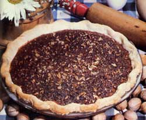

Once you've cracked them, hickory nuts are delicious either raw or roasted... and can be used in place of other nutmeats in recipes, such as this Old-Fashioned Hickory Molasses Pie (which is based on a traditional pecan pie ""receipt"").